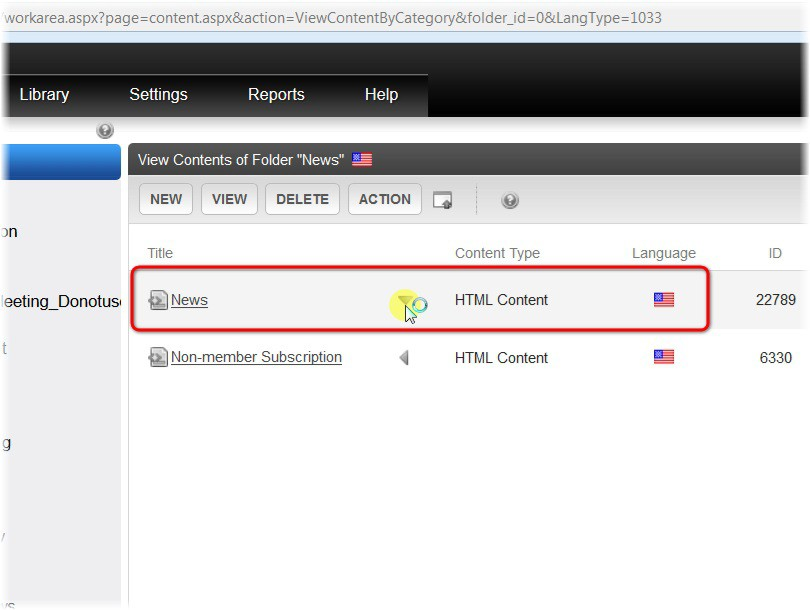
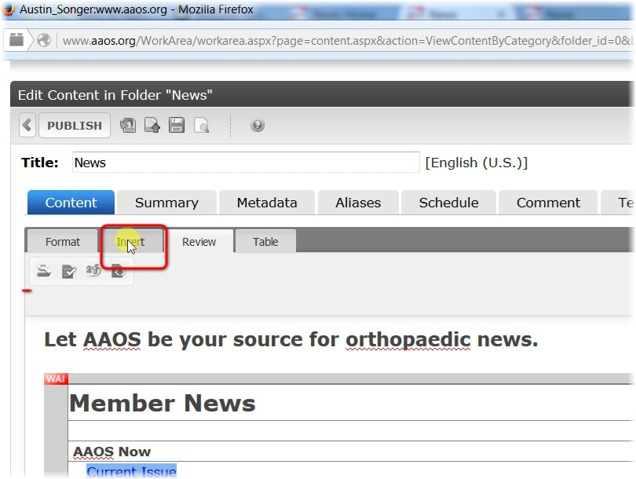
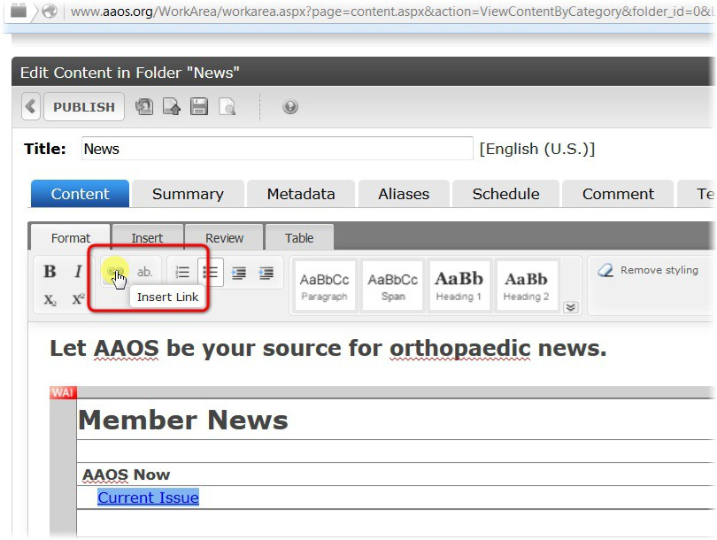
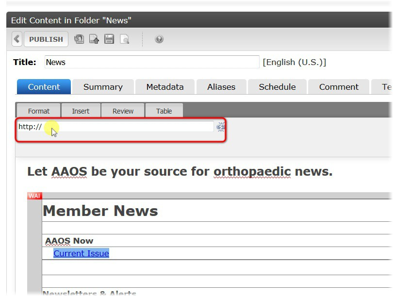
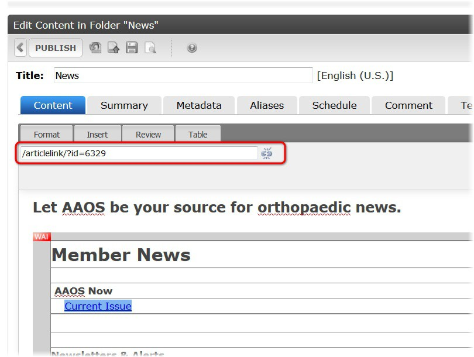

Linking To Ektron Content¶
Click on the web content that you want to add hyperlinks to¶
Note
You can just click the title or (See next Screenshot)
Click Insert¶

Click Insert Link¶
Note
- Erase
http://Note
- If you are linking to a page in Ektron, then you can delete
http://- The easiest way of linking to a page in ektron is by typing the following:
/articlelink/?id=- Then you will add the “Content ID” after the equal sign.
/articlelink/?id=6329